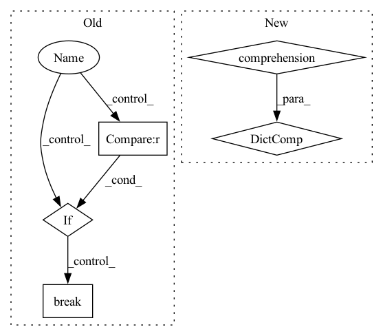

Pattern ID :964
Before Change
dataiter = iter(dataloader)
images, labels = dataiter.next()
for i, data in enumerate(dataloader, 0):
inputs, labels = data
inputs, labels = inputs.to(device), labels.to(device)
print("Input:", inputs.shape)
outputs = model(inputs)
print("model out:", outputs.shape)
if i == 1 :
break
// print labels
//print(" ".join("%5s" % classes[labels[j]] for j in range(4)))
After Change
print("model loaded")
// prepare to count predictions for each class
correct_pred = {classname: 0 for classname in classes}
total_pred = {classname: 0 for classname in classes}
// again no gradients needed
with torch.no_grad():In pattern: SUPERPATTERN
Frequency: 3
Non-data size: 5
Instances Fragment ID: 4606368
Project Name: loretoparisi/hf-experiments
Commit Name: 286971f578836b95fec5d7123b3b23cd5fa01603
Time: 2021-05-11
Author: loretoparisi@gmail.com
File Name: src/mlpvision/train.py
M Class Name: AnonimousClass
N Class Name: AnonimousClass
M Method Name: test(5)
N Method Name: test(4)
M Parent Class:
N Parent Class:
M File Name: src/mlpvision/train.py
N File Name: src/mlpvision/train.py
M Start Line: 156
M End Line: 176
N Start Line: 158
N End Line: 192
Before Change
if context.with_display:
fig = go.Figure()
for class_name in dataset_classes:
if class_name in self.excluded_classes:
continue
if len(dataset_classes) == 2 :
fig.add_trace(go.Scatter(
x=fpr[class_name],
y=tpr[class_name],
line_width=2,
name=f"auc = {roc_auc[class_name]:0.2f}",
))
fig.add_trace(get_cutoff_figure(tpr[class_name], fpr[class_name], thresholds[class_name]))
break
else:
fig.add_trace(go.Scatter(
x=fpr[class_name],
y=tpr[class_name],After Change
else:
display = None
return CheckResult({x: roc_auc[x] for x in classes_for_display} , header="ROC Report", display=display)
def add_condition_auc_greater_than(self, min_auc: float = 0.7):
Add condition - require min allowed AUC score per class. Fragment ID: 4606366
Project Name: deepchecks/deepchecks
Commit Name: ec34587bc5b26414f14a8beaa6ab45df382edb0f
Time: 2022-11-20
Author: 67195469+Nadav-Barak@users.noreply.github.com
File Name: deepchecks/tabular/checks/model_evaluation/roc_report.py
M Class Name: RocReport
N Class Name: RocReport
M Method Name: run_logic(3)
N Method Name: run_logic(3)
M Parent Class: SingleDatasetCheck
N Parent Class: SingleDatasetCheck
M File Name: deepchecks/tabular/checks/model_evaluation/roc_report.py
N File Name: deepchecks/tabular/checks/model_evaluation/roc_report.py
M Start Line: 65
M End Line: 140
N Start Line: 82
N End Line: 137
Before Change
anno.append(Label(label))
image_path = osp.join(self.image_dir, item_id +
ImagenetTxtPath.DEFAULT_IMAGE_EXT)
for path in glob(osp.join(self.image_dir, item_id + "*")):
if osp.splitext(path)[1] in ImagenetTxtPath.IMAGE_EXT_FORMAT :
image_path = path
break
items[item_id] = DatasetItem(id=item_id, subset=self._subset,
image=image_path, annotations=anno)
return items
After Change
image_dir = self.image_dir
if osp.isdir(image_dir):
images = { osp.splitext(osp.relpath(p, image_dir))[0]: p
for p in find_images(image_dir, recursive=True) }
else:
images = {}
with open(path, encoding="utf-8") as f: Fragment ID: 4606367
Project Name: openvinotoolkit/datumaro
Commit Name: 745c16ac8d1d924e7784b3c6b9f6fe1a11a13624
Time: 2021-03-18
Author: maxim.zhiltsov@intel.com
File Name: datumaro/plugins/imagenet_txt_format.py
M Class Name: ImagenetTxtExtractor
N Class Name: ImagenetTxtExtractor
M Method Name: _load_items(2)
N Method Name: _load_items(2)
M Parent Class: SourceExtractor
N Parent Class: SourceExtractor
M File Name: datumaro/plugins/imagenet_txt_format.py
N File Name: datumaro/plugins/imagenet_txt_format.py
M Start Line: 70
M End Line: 76
N Start Line: 52
N End Line: 59